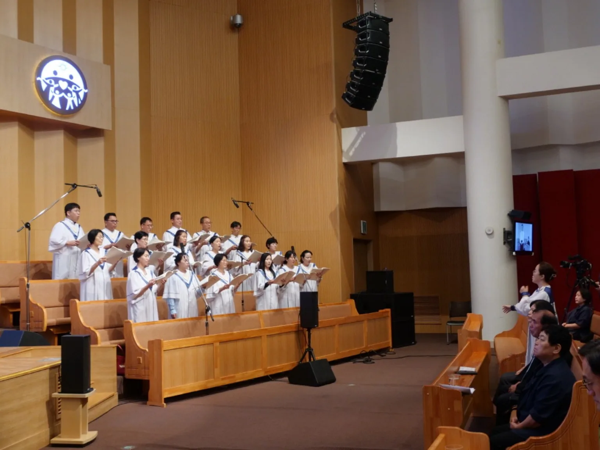
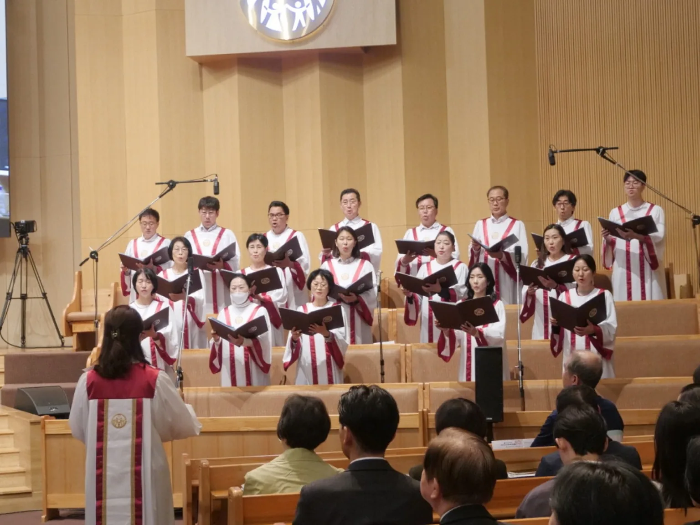
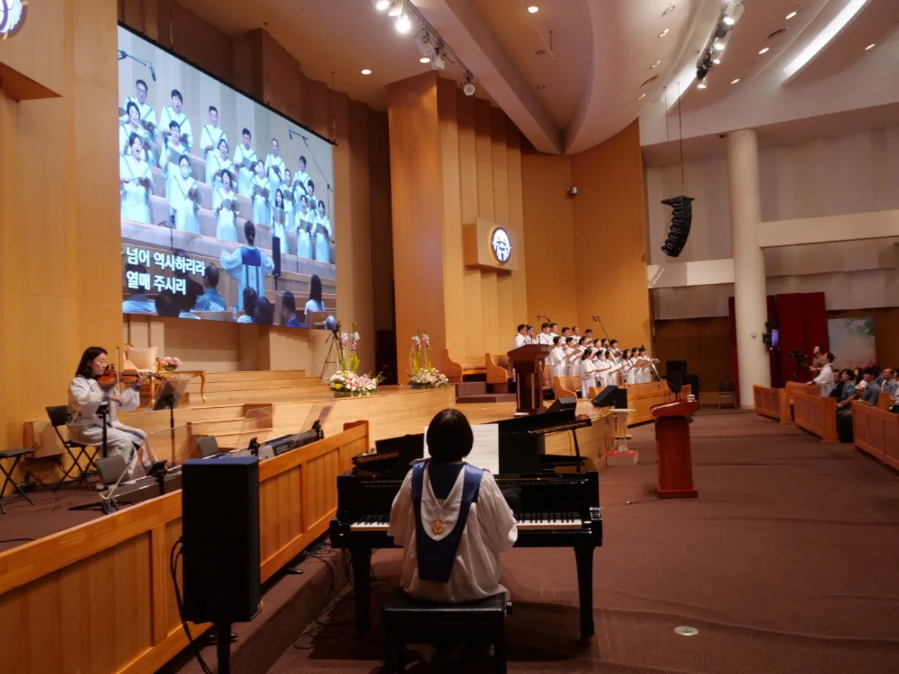
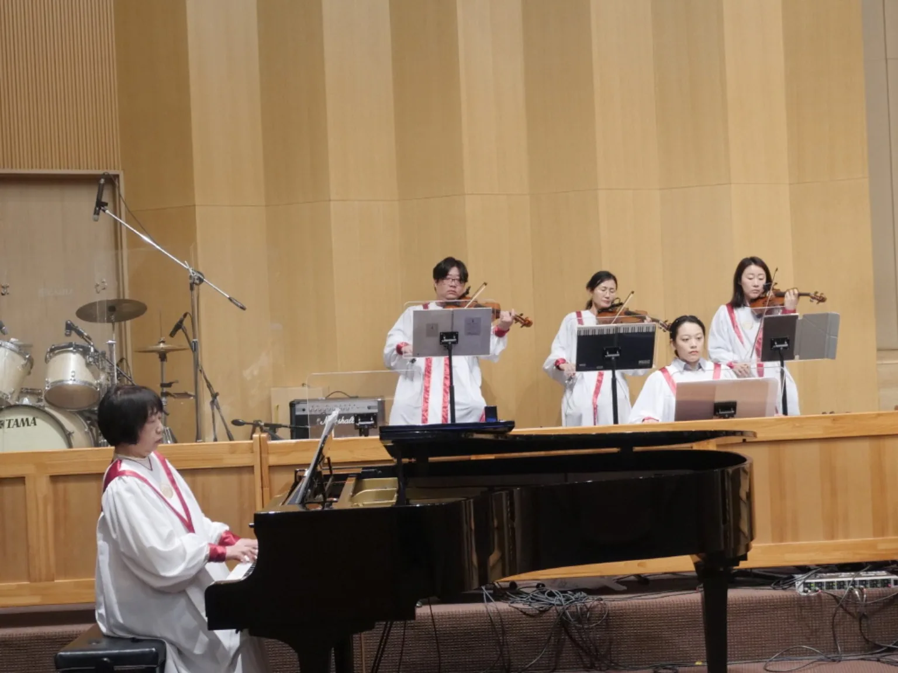
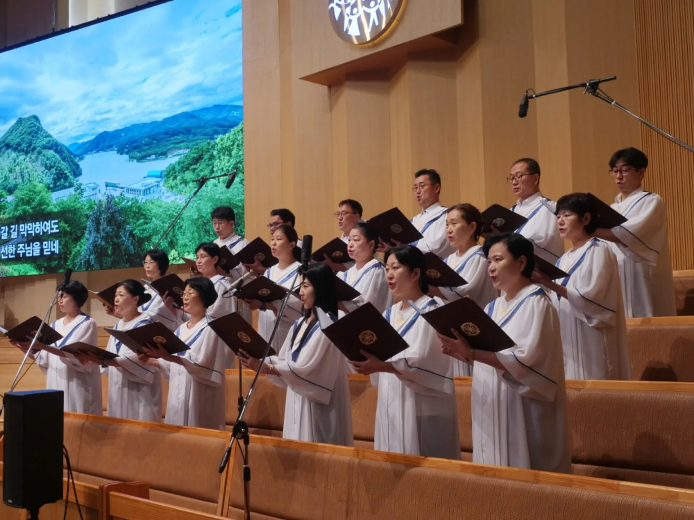
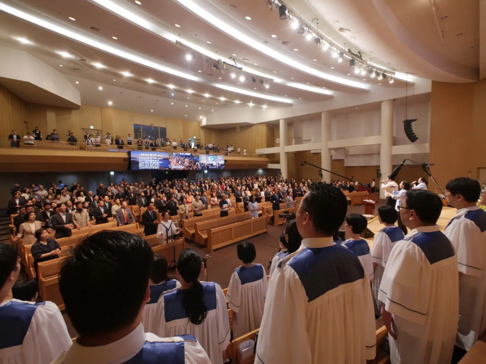

오늘의 이야기
사랑에서 시작해
희망으로 이어지는 길
사랑은 우리를 품어 주고 다시 일어설 힘을 줍니다. 한 사람의 작은 희망이 다른 사람에게 이어지고, 마침내 우리는 함께 벽을 넘어갑니다.
품음→바람→꽃→믿음→담쟁이→나비

오늘의 이야기
사랑은 우리를 품어 주고 다시 일어설 힘을 줍니다. 한 사람의 작은 희망이 다른 사람에게 이어지고, 마침내 우리는 함께 벽을 넘어갑니다.
PART 01

Opening Film
한 곡의 찬양은 무대 위에서 시작되지 않습니다. 함께 악보를 읽고, 서로의 소리에 귀 기울이며 만들어 온 시간이 오늘의 찬양이 됩니다.
품어 주시는 사랑
폭풍이 사라진 뒤에야 평안을 얻는 것이 아니라, 폭풍 가운데에서도 나를 품어 주시는 분을 신뢰하는 노래입니다.
오늘의 긴 이야기는 무엇인가를 이루겠다는 다짐보다 먼저 사랑 안에 머무는 것에서 시작합니다.
희망의 출발점을 ‘내가 강해지는 것’이 아니라 ‘나를 품어 주는 사랑을 다시 발견하는 것’에 둡니다.
다시 불어오는 하늘의 숨결
보이지 않지만 우리는 바람이 지나가는 것을 느낄 수 있습니다. 사랑 안에서 쉰 마음이 이제 다시 움직이기 시작합니다.
전체 순서 보기 ↑남성단원
삶을 지나 알게 되는 것
기쁜 날과 아픈 날, 만남과 헤어짐을 지나며 우리는 뒤늦게 삶의 의미를 발견합니다. 이 노래는 긴 세월 끝에 다시 사랑을 바라보게 합니다.
노래가 들려준 사랑을
이제 한 사람의 삶 속에서 만나봅니다.
효정간증
코미야마 유키히로
노래가 마음으로 전하는 이야기라면, 간증은 한 사람의 실제 삶을 통해 들려주는 이야기입니다. 기쁨과 어려움의 시간 속에서 사랑과 희망을 어떻게 만나왔는지 함께 들어봅니다.
예배 후에는 간증자의 동의를 받아 핵심 메시지나 짧은 요약을 이곳에 기록할 수 있습니다.
PART 02
나로부터 시작되는 희망
한 송이가 피고 또 한 송이가 피어나면 어느 순간 풍경이 달라집니다. 사랑을 기다리는 사람에서 사랑을 시작하는 사람으로.
사랑에 응답하는 결단
사랑을 알게 된 뒤에는 선택이 남습니다. 받은 사랑을 마음속 좋은 기억으로만 남겨둘 것인지, 그 사랑을 따라 살아갈 것인지.
천심성가대가 지나온 길
서로 다른 목소리와 삶을 가진 사람들이 한 곡의 찬양을 위해 마음을 모으며 걸어온 시간입니다.



PART 03

우리 함께 부릅니다
09이 노래의 중요한 단어는 ‘나’가 아니라 ‘우리’입니다. 오늘 이 찬양은 성가대가 들려드리는 노래가 아니라, 우리 모두가 서로에게 들려주는 노래입니다.
함께라면 벽을 넘을 수 있습니다
담쟁이는 벽이 사라지기를 기다리지 않습니다. 서로 이어지고 함께 조금씩 올라갑니다.
오늘 마음에 담은 사랑을 이제 우리의 삶으로 가져갑니다. 가정으로, 일터로, 교회로, 그리고 우리가 만나는 사람들에게로.
PART 04
폐회찬송 · 모두 함께
사랑을 품고 다시 세상으로
작은 나비가 먼 여행을 이어가듯 우리도 오늘 각자의 자리로 돌아갑니다. 그러나 오늘 마음에 담은 사랑과 희망은 계속 이어집니다.
About Us
찬양을 통해 하늘의 사랑과 마음을 전하고자 함께 노래하는 신앙공동체입니다.
우리가 부르는 한 곡의 찬양이 누군가에게 위로가 되고, 다시 일어설 작은 힘이 되기를 바랍니다.
※ 본 페이지는 찬양예배 안내용 시안입니다. 가사 전문을 게시할 경우 각 곡의 저작권 및 이용 허락 여부를 별도로 확인해 주세요.